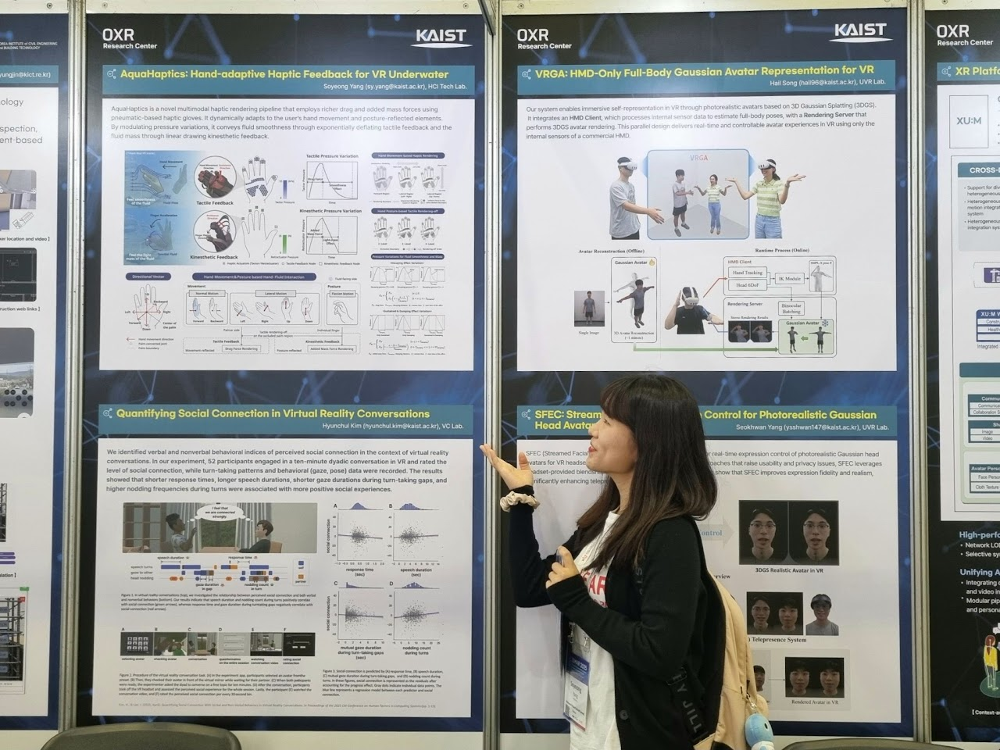
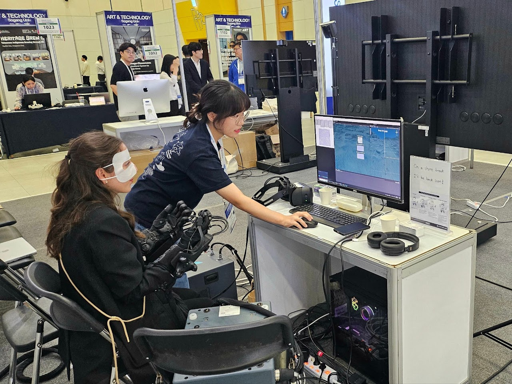
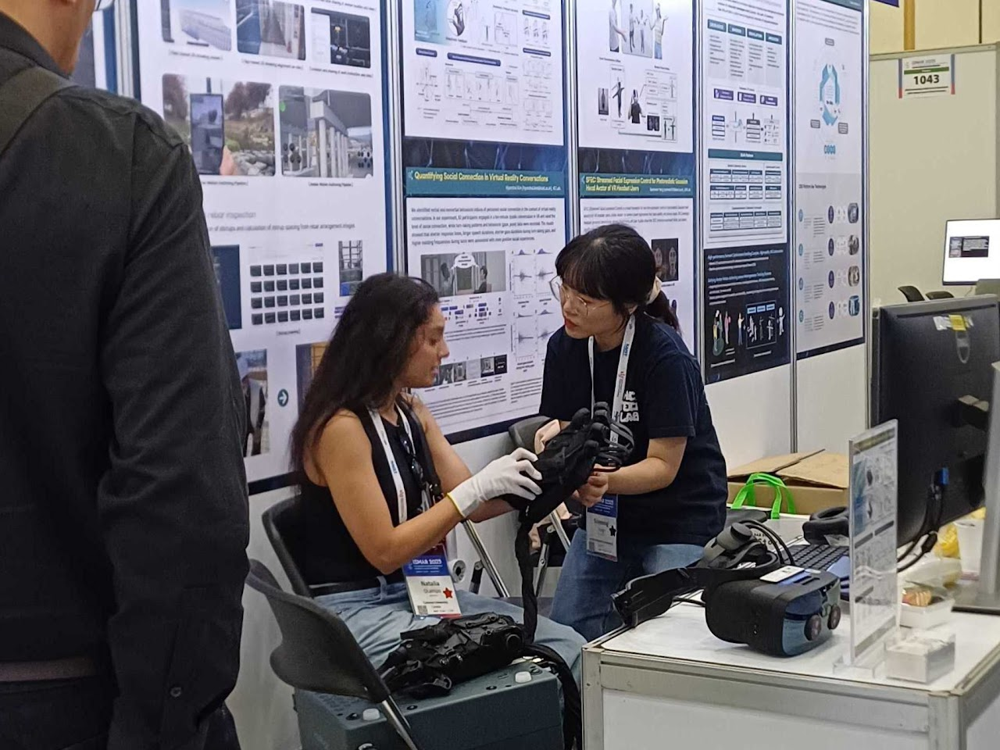

AquaHaptics is a novel multimodal haptic rendering pipeline that employs richer drag and added mass forces using pneumatic-based haptic gloves. It dynamically adapts to the user's hand movement and posture-reflected elements. By modulating pressure variations, it conveys fluid smoothness through exponentially deflating tactile feedback and the fluid mass through linear drawing kinesthetic feedback.


